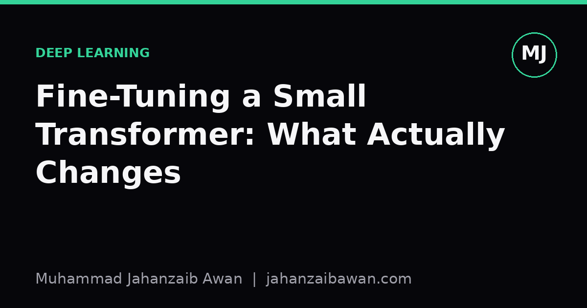

Fine-Tuning a Small Transformer: What Actually Changes
A worked walkthrough of what happens inside a small transformer during fine-tuning, and why understanding it saves you from silent failure modes later.

Why this matters more than it looks
Fine-tuning gets treated as a solved problem: load a pretrained checkpoint, add a small head, run a few epochs, done. In practice it is the step where most silent mistakes creep in, because the model already works reasonably well before you touch it. A pretrained transformer has learned general structure from a large corpus: syntax, co-occurrence patterns, some semantics. Fine-tuning nudges that structure towards a specific task. The danger is that a small amount of nudging can look like success on a validation set while actually teaching the model shortcuts that have nothing to do with the underlying problem.
Consider a small transformer, something in the range of a few million to a few hundred million parameters, being adapted for a binary classification task such as detecting whether a product review is genuine or fabricated. Before fine-tuning, the model's final layer outputs are essentially generic contextual representations. After fine-tuning, those representations get reshaped specifically to separate your two classes. Understanding exactly which parts of the network move, and how far, tells you whether that reshaping is doing something sensible or something brittle.
What changes under the hood
Start with the embedding and early layers. In most fine-tuning runs these move the least, because gradients from a classification head attenuate as they backpropagate through many layers, and because early layers encode fairly general linguistic features that are useful regardless of task. If you log the magnitude of weight updates per layer, a common pattern is updates an order of magnitude smaller in layer one than in the final two or three layers. This is not a coincidence; it reflects how gradient-based optimisation distributes blame for errors, concentrating correction near the output where the task-specific loss is computed.
The classification head itself, often a single linear layer mapping a pooled representation to class logits, changes the most, and changes fastest. In a worked example with a learning rate of two times ten to the minus five and a batch size of sixteen, you might see the head's weights shift by a relative norm of fifteen to twenty per cent within the first epoch, while the embedding layer shifts by under one per cent over the same period. This asymmetry is why many practitioners get reasonable results even with very few epochs: the head is doing most of the adaptation work, essentially learning a decision boundary on top of representations that barely move.
The attention patterns in the upper layers often shift more subtly but more meaningfully. Before fine-tuning, attention heads in the last few layers might spread weight fairly broadly across a sentence. After fine-tuning on, say, a sentiment task, you can sometimes observe heads sharpening their focus onto specific tokens, adjectives and negations in particular, because those tokens carry most of the signal for the loss being minimised. This is the useful kind of change: the model is learning where to look, not just how to classify what it already sees.
The dangerous kind of change happens when the model finds a shortcut unrelated to the actual task. Suppose your training data for the fake review detector happens to have fabricated reviews that are, on average, twenty words shorter than genuine ones, purely as an artefact of how the dataset was assembled. A small transformer will happily learn to associate length with the label, achieving ninety per cent accuracy on a held-out set drawn from the same distribution, while failing badly the moment it meets real-world reviews where that correlation does not hold. Nothing in the loss curve tells you this is happening. The model looks like it has learned something useful; it has learned a statistical accident.
Catching the difference with evaluation, not vibes
This is where evaluation design does more work than architecture choice. A leakage-aware split is the first line of defence: make sure your train, validation and test sets are partitioned by whatever unit actually varies in deployment, not just randomly shuffled rows. If reviews from the same product or the same author appear in both training and test sets, the model can partly memorise author style rather than learn the general task, and your test accuracy will overstate real performance.
The second line of defence is a strong, boring baseline run alongside the transformer. A logistic regression on word counts, or even a rule based on review length, takes an afternoon to build and tells you immediately whether your fine-tuned model is earning its complexity. If the baseline gets eighty-six per cent and your fine-tuned transformer gets eighty-eight, that two-point gap needs scrutiny before you call it a win, because it might disappear entirely on a differently sourced test set, or it might be the genuine, valuable contribution of contextual understanding. You cannot tell which without the comparison.
A practical diagnostic I rely on is checking performance on a deliberately shifted slice of data: different time period, different source, different length distribution. If accuracy drops sharply on that slice while staying stable on an identically distributed holdout, that is a strong signal the model leaned on a shortcut during fine-tuning rather than learning the intended signal. This costs almost nothing to set up and catches a failure mode that standard cross-validation simply cannot see, because cross-validation shares the same biases as the training data by construction.
The practical takeaway
Fine-tuning a small transformer is not a single uniform operation; it is a layered process where the output head adapts quickly and substantially, the upper attention layers refine what they attend to, and the lower layers barely move at all. That pattern is usually healthy. What turns fine-tuning from a reliable tool into a source of false confidence is not the architecture, it is the data and the evaluation around it. Before trusting a fine-tuned result, check the split for leakage, compare against a simple baseline, and test on a slice that differs from your training distribution in some concrete, specified way. None of this requires more compute. It requires treating the evaluation with the same seriousness as the model itself, which is usually the part that gets rushed.